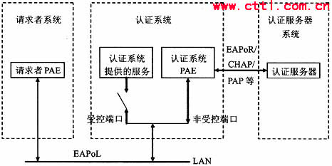
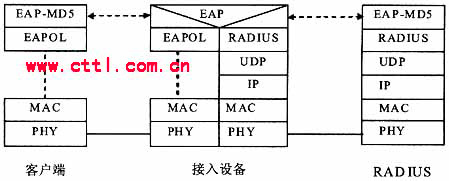
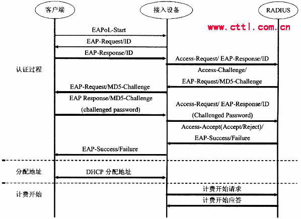
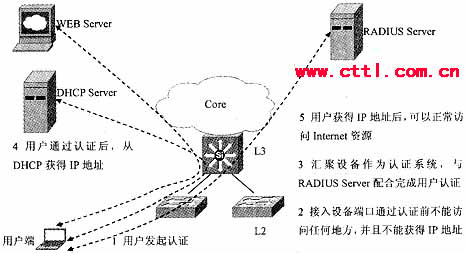
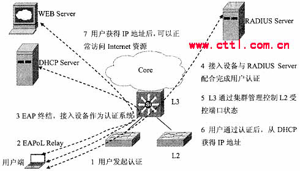

一、引言
802.1x协议起源于802.11协议，后者是IEEE的无线局域网协议，制订802.1x协议的初衷是为了解决无线局域网用户的接入认证问题。 IEEE802LAN协议定义的局域网并不提供接入认证，只要用户能接入局域网控制设备(如LANS witch)，就可以访问局域网中的设备或资源。这在早期企业网有线LAN应用环境下并不存在明显的安全隐患。
随着移动办公及驻地网运营等应用的大规模发展，服务提供者需要对用户的接入进行控制和配置。尤其是WLAN的应用和LAN接入在电信网上大规模开展，有 必要对端口加以控制以实现用户级的接入控制，802.lx就是IEEE为了解决基于端口的接入控制(Port-Based Network Access Contro1)而定义的一个标准。
二、802.1x认证体系
802.1x是一种基于端口的认证协议，是一种对用户进行认证的方法和策略。端口可以是一个物理端口，也可以是一个逻辑端口(如VLAN)。对于无线局 域网来说，一个端口就是一个信道。802.1x认证的最终目的就是确定一个端口是否可用。对于一个端口，如果认证成功那么就“打开”这个端口，允许所有的 报文通过；如果认证不成功就使这个端口保持“关闭”，即只允许802.1x的认证协议报文通过。
802.1x的体系结构如图1所示。它的体系结构中包括三个部分，即请求者系统、认证系统和认证服务器系统三部分：

图1 802.1x认证的体系结构
1.请求者系统
请求者是位于局域网链路一端的实体，由连接到该链路另一端的认证系统对其进行认证。请求者通常是支持802.1x认证的用户终端设备，用户通过启动客户端软件发起802.lx认证，后文的认证请求者和客户端二者表达相同含义。
2.认证系统
认证系统对连接到链路对端的认证请求者进行认证。认证系统通常为支持802.lx协议的网络设备，它为请求者提供服务端口，该端口可以是物理端口也可以 是逻辑端口，一般在用户接入设备(如LAN Switch和AP)上实现802.1x认证。后文的认证系统、认证点和接入设备三者表达相同含义。
3.认证服务器系统
认证服务器是为认证系统提供认证服务的实体，建议使用RADIUS服务器来实现认证服务器的认证和授权功能。
请求者和认证系统之间运行802.1x定义的EAPO (Extensible Authentication Protocolover LAN)协议。当认证系统工作于中继方式时，认证系统与认证服务器之间也运行EAP协议，EAP帧中封装认证数据，将该协议承载在其它高层次协议中(如 RADIUS)，以便穿越复杂的网络到达认证服务器；当认证系统工作于终结方式时，认证系统终结EAPoL消息，并转换为其它认证协议(如 RADIUS)，传递用户认证信息给认证服务器系统。
认证系统每个物理端口内部包含有受控端口和非受控端口。非受控端口始终处于双向连通状态，主要用来传递EAPoL协议帧，可随时保证接收认证请求者发出的EAPoL认证报文；受控端口只有在认证通过的状态下才打开，用于传递网络资源和服务。
三、802.1x认证流程
基于802.1x的认证系统在客户端和认证系统之间使用EAPOL格式封装EAP协议传送认证信息，认证系统与认证服务器之间通过RADIUS协议传送 认证信息。由于EAP协议的可扩展性，基于EAP协议的认证系统可以使用多种不同的认证算法，如EAP-MD5，EAP-TLS，EAP- SIM，EAP-TTLS以及EAP-AKA等认证方法。
以EAP-MD5为例，描述802.1x的认证流程。EAP-MD5是 一种单向认证机制，可以完成网络对用户的认证，但认证过程不支持加密密钥的生成。基于EAP-MD5的802.1x认证系统功能实体协议栈如图2所示。基 于EAP-MD5的802.1x认证流程如图3所示，认证流程包括以下步骤：
图2 基于EAP-MD5的802.1x认证系统功能实体协议栈
图3 基于EAP-MD5的802.1x认证流程
(1)客户端向接入设备发送一个EAPoL-Start报文，开始802.1x认证接入；
(2)接入设备向客户端发送EAP-Request/Identity报文，要求客户端将用户名送上来；
(3)客户端回应一个EAP-Response/Identity给接入设备的请求，其中包括用户名；
(4)接入设备将EAP-Response/Identity报文封装到RADIUS Access-Request报文中，发送给认证服务器；
(5)认证服务器产生一个Challenge，通过接入设备将RADIUS Access-Challenge报文发送给客户端，其中包含有EAP-Request/MD5-Challenge；
(6)接入设备通过EAP-Request/MD5-Challenge发送给客户端，要求客户端进行认证；
(7)客户端收到EAP-Request/MD5-Challenge报文后，将密码和Challenge做MD5算法后的Challenged-Pass-word，在EAP-Response/MD5-Challenge回应给接入设备；
(8)接入设备将Challenge，Challenged Password和用户名一起送到RADIUS服务器，由RADIUS服务器进行认证：
(9)RADIUS服务器根据用户信息，做MD5算法，判断用户是否合法，然后回应认证成功/失败报文到接入设备。如果成功，携带协商参数，以及用户的相关业务属性给用户授权。如果认证失败，则流程到此结束；
(10)如果认证通过，用户通过标准的DHCP协议(可以是DHCP Relay)，通过接入设备获取规划的IP地址；
(11)如果认证通过，接入设备发起计费开始请求给RADIUS用户认证服务器；
(12)RADIUS用户认证服务器回应计费开始请求报文。用户上线完毕。
四、802.1x认证组网应用
按照不同的组网方式，802.1x认证可以采用集中式组网(汇聚层设备集中认证)、分布式组网(接入层设备分布认证)和本地认证组网。不同的组网方式下，802.1x认证系统实现的网络位置有所不同。
1.802.1x集中式组网(汇聚层设备集中认证)
802.1x集中式组网方式是将802.1x认证系统端放到网络位置较高的LAN Switch设备上，这些LAN Switch为汇聚层设备。其下挂的网络位置较低的LAN Switch只将认证报文透传给作为802.lx认证系统端的网络位置较高的LAN Switch设备，集中在该设备上进行802.1x认证处理。这种组网方式的优点在于802.1x采用集中管理方式，降低了管理和维护成本。汇聚层设备集 中认证如图4所示。
图4 802.1x集中式组网(汇聚层设备集中认证)
2.802.1x分布式组网(接入层设备分布认证)
802.1x分布式组网是把802.lx认证系统端放在网络位置较低的多个LAN Switch设备上，这些LAN Switch作为接入层边缘设备。认证报文送给边缘设备，进行802.1x认证处理。这种组网方式的优点在于，它采用中/高端设备与低端设备认证相结合的 方式，可满足复杂网络环境的认证。认证任务分配到众多的设备上，减轻了中心设备的负荷。接入层设备分布认证如图5所示。
图5 802.1x分布式组网(接入层设备分布认证)
802.lx分布式组网方式非常适用于受控组播等特性的应用，建议采用分布式组网对受控组播业务进行认证。如果采用集中式组网将受控组播认证设备端放在 汇聚设备上，从组播服务器下行的流在到达汇聚设备之后，由于认证系统还下挂接入层设备，将无法区分最终用户，若打开该受控端口，则汇聚层端口以下的所有用 户都能够访问到受控组播消息源。反之，如果采用分布式组网，则从组播服务器来的组播流到达接入层认证系统，可以实现组播成员的精确粒度控制。
3.802.1x本地认证组网
802.1x的AAA认证可以在本地进行，而不用到远端认证服务器上去认证。这种本地认证的组网方式在专线用户或小规模应用环境中非常适用。它的优点在于节约成本，不需要单独购置昂贵的服务器，但随着用户数目的增加，还需要由本地认证向RADIUS认证迁移。
五、结束语
802.1x认证系统提供了一种用户接入认证的手段，它仅关注端口的打开与关闭。对于合法用户(根据账号和密码)接入时，该端口打开，而对于非法用户接 入或没有用户接入时，则使端口处于关闭状态。认证的结果在于端口状态的改变，而不涉及其它认证技术所考虑的IP地址协商和分配问题，是各种认证技术中最为 简化的实现方案。
必须注意到802.1x认证技术的操作颗粒度为端口，合法用户接入端口之后，端口始终处于打开状态，此时其它用 户(合法或非法)通过该端口接入时，不需认证即可访问网络资源。对于无线局域网接入而言，认证之后建立起来的信道(端口)被独占，不存在其它用户非法使用 的问题。但如果802.lx认证技术应用于宽带IP城域网，就存在端口打开之后，其它用户(合法或非法)可自由接入且难以控制的问题。因此，在提出可运 营、可管理要求的宽带IP城域网中如何使用该认证技术，还需要谨慎分析所适用的场合，并考虑与其它信息绑定组合认证的可能性。
你可以使用这个链接引用该篇文章 http://publishblog.blogchina.com/blog/tb.b?diaryID=4594596
| 发布人： | 邮箱： | ||
| 主 页： | |||
| 验证码： | |||
| 评论内容： |
|||